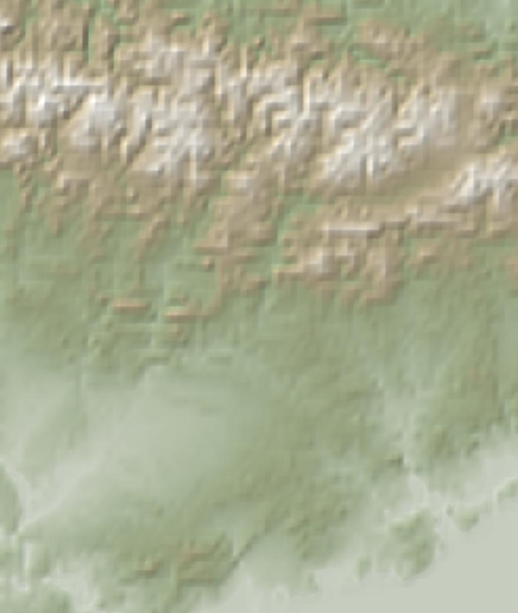

Ayúdanos a mejorar
Cuéntanos cómo te ha ido en el monte, tanto si has llenado la cesta como si has vuelto de vacío. Cada aviso afina la previsión para todos.
Este fin de semana
Las tres mejores zonas. Toca una para ver el detalle.
Los próximos 10 días
Mejor puntuación de cada zona, de mejor a peor. Toca una casilla para abrir ese día.
65 o más40 a 64menos de 40sin datos todavía
Avisos
Temporada
Especie
Especie

Mapa: © OpenStreetMap, SRTM · OpenTopoMap (CC-BY-SA)
Arrastra para moverte y pellizca o usa + y − para ampliar. Toca una zona para ver su detalle.
Lo que hemos encontrado
Enviado. Gracias por contarlo: se revisa y se añade a la lista.
Ayúdanos a mejorar
Cuéntanos cómo te ha ido en el monte, tanto si has llenado la cesta como si has vuelto de vacío. Cada aviso afina la previsión para todos.